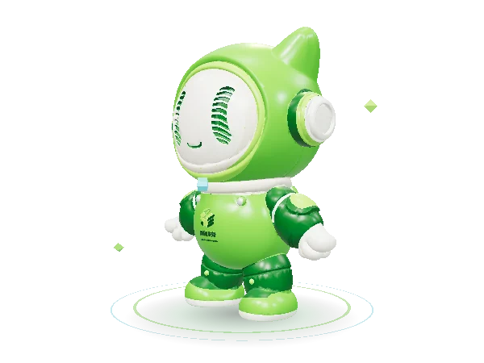
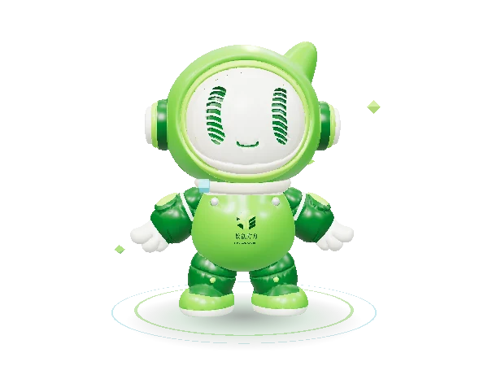

双叶萌芽冠顶
左长右短的流线叶片凌空舒展，象征农业科研与绿色生态的持续新生。
一体化智能种植解决方案，融合物联网、人工智能、大数据与高分子绿色材料，降低种植对人工经验的依赖与智能设备的使用门槛。
随着页面滚动，镜头推近吉祥物胸前浮雕标识。13 组立体棱柱在 WebGL 空间中逐层漂浮展开，诠释“数字智造”与“绿色生命”的共生构型。
左长右短的流线叶片凌空舒展，象征农业科研与绿色生态的持续新生。
亮绿与深森绿双色交叠构成“SF”立体方舱，隐喻模块化种植舱与多维数据流。
模型旋转展示背部 AIoT 控制核心。切换作物预设，查看各方案的湿度、光照、二氧化碳与营养液供给示例。
结合《农林实训基地智慧种植彩绘方案》四面空间视觉，左右滑动或点选下方立体方舟展面，感受从技术验证到大众科普的场景延伸。

主立面呈现透明智能温室中的立体水培菜畦、精密采摘机械臂与人形农艺助手，直观建立“未来农业展示窗口”的第一印象。
支持模块化 DIY 自由拼装组合，适配校园创客空间与家庭阳台场景。
配套图文科普手册与系列短视频，让传感原理与植物生理变得直观好懂。
在密闭可控环境中培育零农残新鲜果蔬，从舱内直达每日健康餐桌。
把植物生长的治愈感融入日常空间，践行绿色、从容的智慧慢生活。
点选不同应用航道，3D 方舟吉祥物将实时切换环境光影与生态卫星环，呈现“智能化 + 数据增值 + 创新材料赋能”的立体商业模式。
现在，整个 3D 舞台已完全解锁：用手指滑动或鼠标拖拽即可 360° 巡检吉祥物建模细节；轻触模型表面即可触发实体化漂浮弹跳与胸徽立体拆解。

从种子定植、光温水肥 AI 调控日志到采收批次，扫码即见真实透明的智慧农业档案。